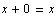
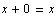
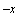
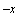
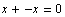
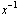
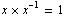
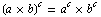

 for all
All algera texts include a discussion of the basic algebraic properties, however these will play a larger role in our continuing discussion than is typical. I will first state each and then give some attention to how they will be important in our continuing discussion.
The Additive Identity is a number that can be added to any other number without changing its value. Can you think of such a number?
The Additive Identity, 0, is a number such that:
 for all 
As we will be dealing with the Real numbers throughout this book, it will suffice to refer to this number as zero, 0. It is worthy of note that not all number sets have such a number though. See Number System Contruction Activity.
The Additive Inverse is the number that can be added to another to sum to the Additive Identity.
Given a number,  , the Additive Inverse is a number  such that:
, the Additive Inverse is a number  such that:
 for all  .
.
We will be employing the concept of an additive identity throughout our discussion to eliminate subtraction from our equation solving and expression simplifying that we will be doing throughout our discussion of algebra. Said briefly here, instead of subtracting, we will always add the opposite of the number.
The Multiplicative Identity is a number by which any other can be muliplied without changing its value. Can you think of such a number?
The Multiplicative Identity, 1, is a number such that
x × 1 = x for all x
Since we will be dealing with Real numbers throughout this course, it will suffice to call the Multiplicative Identity 1 but it is worthy of note that we could construct a number system where a different number has the property of not changing any other value under multiplication. See Number System Construction Activity.
The Multiplicative Inverse is the number that, when multiplied by the original number, yields a product of the Multiplicative Identity. As we will be dealing with the real number system and thus our Multiplicative Identity is 1, we can simplify this statement as follows:
Given a number x, the Multiplicative Inverse is a number such that

This says that for any number, there is another, by which we can multiply the original to obtain a product of the Multiplicative Identity. As was the case with the Additive Inverse, we will be employing the concept of a Multiplicative Inverse to simplify our equation solving and expression simplifying processes by eliminating the need for division. That is, division is multiplication by the reciprocal.
Commutative Property of Addition
For all numbers, a and b,
a + b = b + a
Commutative Property of Multiplication
For all numbers, a and b,
a × b = b × a
In words, these two properties state that the order in which we either add or multiply two numbers will not affect the final sum or product.
Associative Property of Addition
For all numbers, a, b and c,
(a + b) + c = a + (b + c)
In words,the addition version says that when we are finding the sum of three numbers,we can sum the first two and then add the third or we can add the first to the sum of the second and third.In either case,our final sum will be the same.
Associative Property of Multiplication
For all numbers, a, b and c,
(a × b) × c = a × (b × c)
Similarly, the multiplication version states that when finding the product of three numbers, we can either multiply the product of the first two with the third or multiply the first by the product of the second and third. Our product in both cases will be the same.
Like the Commutative and Associative properties, the Distributive Property has two versions. Unlike all of our previous rules though, each of the Distributive Property's versions involve multiple operations. Furthermore, it offers us a far less subtle result.
Distributive Property of Multiplication over Addition
For all numbers a, b and c,
a × (b + c) = a × b + a × c
In words, this says when multiplying a sum by a number, we may first sum and then multiply or we can multiply each of the sum's addends by the number and then sum the two products.
Distributive Property of Exponents over Multiplication
For all numbers a, b and c,

This property states that when raising a product to a power, we may instead raise each of the factors to that power and find the product of these two exponential term or find the product and then raise it to the power.